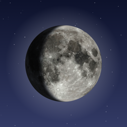

Simple Moon Phase Widget
A realistic moon phase widget for your iPhone Lock Screen.
Adding the widget
- Long-press your Lock Screen and tap Customize.
- Choose Lock Screen, then tap the widget area below the clock.
- Find Moon Phase and tap the circular widget to add it.
Frequently asked questions
How is the phase calculated?
Entirely on your device from the length of the lunar cycle. No internet connection or location is needed.
Why does the widget look grayscale?
iOS displays Lock Screen widgets in a single tint that matches your wallpaper. The full-color moon is shown inside the app.
How often does it update?
The widget refreshes hourly throughout the day.
Contact
Questions, bugs or feature requests: open an issue on GitHub.
Moon surface imagery: NASA's Scientific Visualization Studio / Lunar Reconnaissance Orbiter.